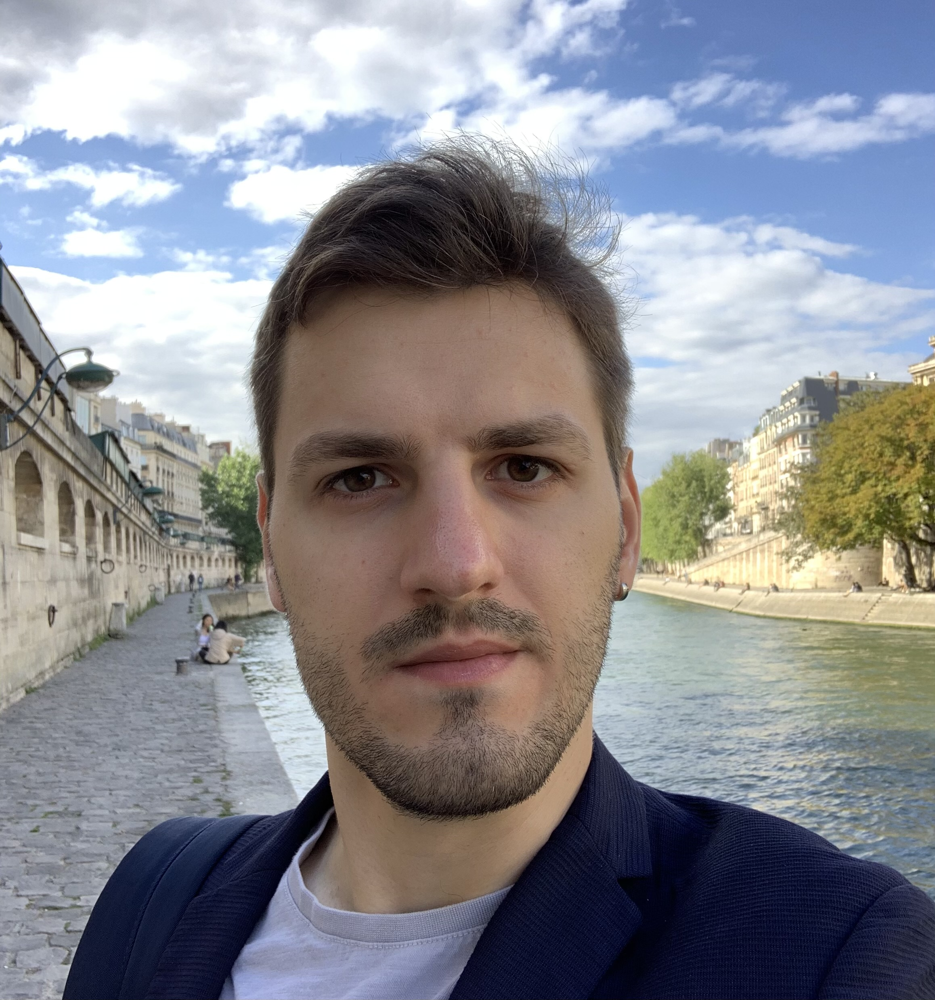

Oleg Balabanov
Research scientist

I am a research scientist in Department of Statistics at UC Berkeley and Big Data group at ICSI, as well as an affiliate researcher in Machine Learning and Analytics group at Lawrence Berkeley National Laboratory.
Most of my work focuses on randomized linear algebra and numerical methods for large-scale modeling, optimization, and machine learning. My supervisor is Michael Mahoney.
Previously, I did a postdoc in Paris at Inria and Jacques-Louis Lions Laboratory at Sorbonne, under the supervision of Laura Grigori. I earned a joint PhD degree in applied mathematics and civil engineering as part of the Simulation in Engineering and Entrepreneurship Development program, a collaboration between Centrale Nantes and Polytechnic University of Catalonia (UPC), where I was supervised by Anthony Nouy and Nuria Parés. Prior to that, I earned a joint master's degree in Computational Mechanics from Swansea University and UPC. My undergraduate studies were in Taiwan at National Chiao Tung University (now National Yang Ming Chiao Tung University), where I double-majored in electrophysics and applied mathematics.
Selected publications
-
2024
Randomized Block Gram-Schmidt Process for the Solution of Linear Systems and Eigenvalue Problems
SIAM Journal on Scientific Computing
-
2023
Block Subsampled Randomized Hadamard Transform for Nyström Approximation on Distributed Architectures
International Conference on Machine Learning
-
2022
Randomized Gram–Schmidt Process with Application to GMRES
SIAM Journal on Scientific Computing
-
2021
Randomized Linear Algebra for Model Reduction. Part II: Minimal Residual Methods and Dictionary-based Approximation
Advances in Computational Mathematics
-
2019
Randomized Linear Algebra for Model Reduction. Part I: Galerkin Methods and Error Estimation
Advances in Computational Mathematics